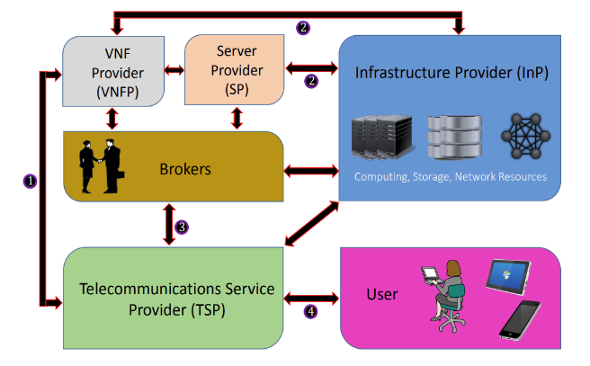

- Provedor de Infraestrutura (InPs): Neles estão presentes os recursos de processamento, armazenamento e conexões de rede físicas que serão usados para a infraestrutura de NFV. Eles são os responsáveis pelo gerenciamento e distribuição de recursos para as operadoras de telecomunicações.
- Provedor de VNFs e/ou Servidores (VNFPs/SPs): Esses provedores tomam o lugar dos fornecedores de equipamentos de rede (i.e.: Alcatel-Lucent, Cisco, etc.) e dividem o papel delas em 2 entidades separadas: os provedores de VNFs, que constroem e provêem as implementações das funções de rede às TSPs ou às InPs, dependendo da escolha; e os provedores de servidores, atuando basicamente da mesma forma que os VNFPs, mas com os servidores nos quais as VNFs funcionarão.
- Provedor de Serviços de Telecomunicação / “Operadoras” (TSPs): Estes são os que, ao obter os recursos necessários dos InPs, podem então usar as VNFs obtidas dos VNFPs e então encadeá-las, para oferecer como serviço ao usuário final.
- Corretores (Brokers): Podem ocorrer casos em que uma operadora necessita de recursos de várias InPs ou um conjunto de VNFs, que integrados resultam no serviço a ser oferecido, porém estão divididas entre várias VNFPs. Como uma medida auxiliar, os corretores negociam e agregam os recursos e/ou funções de acordo com a demanda das operadoras.

Figura X: Modelo Empresarial NFV. Extraído de https://arxiv.org/pdf/1509.07675.pdf no dia 03/06/2018.
O caso do gráfico acima é apenas um entre tantas outras combinações desse modelo. As próprias operadoras podem ter a infraestrutura suficiente para instanciar VNFs de outras VNFPs ou até suas próprias. O esquema pode se tornar bem centralizado, com a operadora construindo sua própria infraestrutura, VNFs e servidores sem ajuda de corretores (claro, mantendo o código aberto para ser usado por outras operadoras); ou pode ser um processo horizontal, mais descentralizado, em que cada entidade citada acima é separada uma da outra, com operadoras revendendo seus próprios serviços a outras operadoras (quase como uma InP).